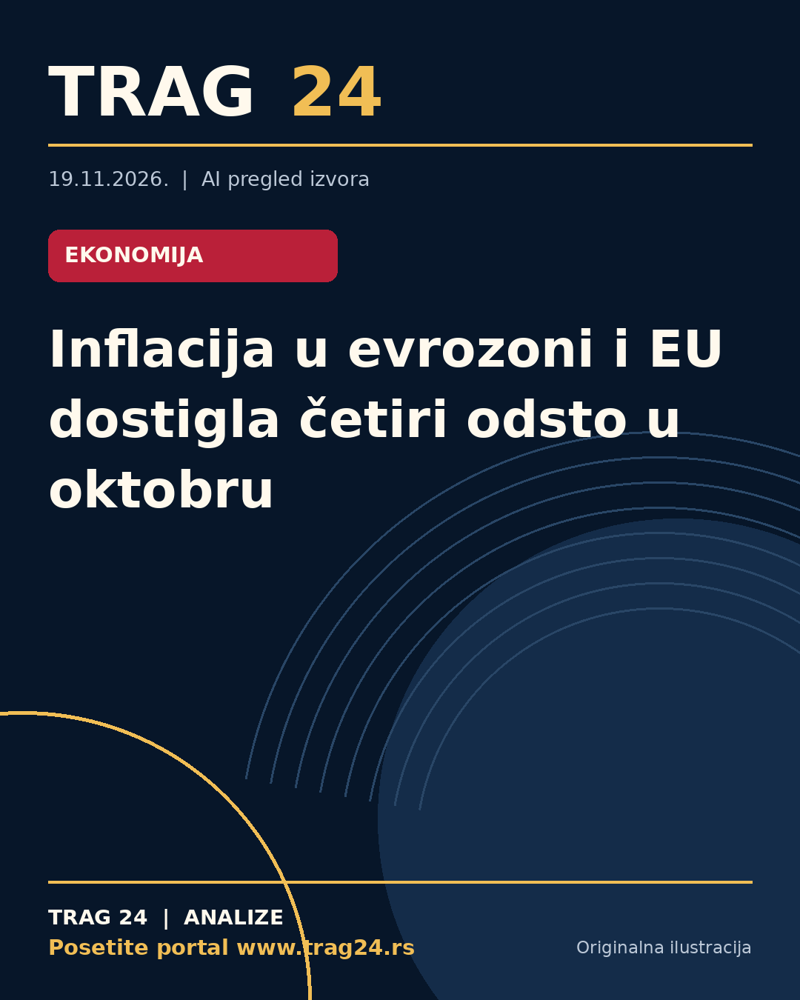

Inflacija u evrozoni i EU dostigla četiri odsto u oktobru

ŠTA SE DOGODILO
Godišnja stopa inflacije u evrozoni i na nivou cele Evropske unije (EU) u oktobru 2023. godine iznosila je četiri odsto, što predstavlja rast od 0,2 procentna poena u odnosu na septembar iste godine. Ovo je najviši nivo inflacije u poslednje tri godine. Glavni faktor za povećanje cena ostali su energenti, čije su cene porasle za oko 21 odsto u poređenju sa oktobrom prethodne godine.
HRONOLOGIJA
Inflacija u evrozoni je u septembru 2023. iznosila 3,8 odsto, dok je u oktobru narasla na četiri odsto. U istom periodu, na nivou cele EU, inflacija je takođe dostigla četiri odsto u oktobru, nasuprot nižim vrednostima tokom prethodne godine, kada je inflacija bila oko 2,1 odsto u evrozoni i 2,5 odsto u EU. Pored energenata, došlo je do povećanja cena u sektorima usluga, hrane, alkohola i duvana, kao i industrijskih proizvoda bez energije.
ŠTA NAVODE IZVORI
Evrostat, koji je objavio podatke, naglašava da su cene energenata u oktobru 2023. godine bile 21 odsto više nego u istom mesecu prethodne godine, što je glavni pokretač inflacije. Rast cena je primećen i u uslugama (3,3 odsto u evrozoni), hrani, alkoholu i duvanu (1,5 odsto), kao i industrijskim proizvodima bez energije (1,2 odsto). Među najvećim ekonomijama evrozone, inflacija je porasla u Francuskoj, Italiji i Holandiji, dok je u Nemačkoj i Španiji blago usporila. Najniža inflacija zabeležena je u Švedskoj (0,6 odsto), Češkoj i Danskoj (oko 2,1 odsto), a najviša u Rumuniji (7,0 odsto), Litvaniji (6,1 odsto) i Bugarskoj (5,9 odsto).
ŠTA JE POTVRĐENO
Potvrđeno je da je godišnja inflacija u evrozoni i Evropskoj uniji u oktobru 2023. godine iznosila četiri odsto. Takođe je potvrđeno da je glavni doprinosk inflaciji dao sektor energije sa rastom cena od 21 odsto u odnosu na prošlu godinu. Ostali sektori koji su doprineli inflaciji su usluge, hrana, alkohol, duvan i industrijski proizvodi bez energije. Razlike su zabeležene u stopama inflacije između pojedinih zemalja članica.
ŠTA NIJE POTVRĐENO
Nije potvrđeno koliko će dugo će inflacija ostati na ovom nivou ili koji će biti njeni neposredni efekti na ekonomiju pojedinačnih zemalja. Takođe nema podataka o mogućim merama koje će državne institucije ili EU preduzeti kao odgovor na ovaj inflatorni pritisak.
ŠTA OSTАJE OTVORENO: Ostaje otvoreno pitanje dugoročnih posledica ove stope inflacije na ekonomije evrozone i EU, kao i da li će trend rasta cena energenata i ostalih kategorija potrošačkih dobara biti održiv ili će doći do korekcije u narednim mesecima. Takođe nije jasno kako će se inflacija odraziti na životni standard građana i odluke evropskih centralnih banaka u bliskoj budućnosti.
Izvori
- https://biznis.telegraf.rs/info-biz/4435204-inflacija-u-evrozoni-potvrdjena-na-cetiri-odsto-u-oktobru-najvisa-za-tri-godine
- https://insajder.net/prenosimo/eurostat-inflacija-u-evropskoj-unije-cetiri-odsto
- https://n1info.rs/biznis/inflacija-u-eu-cetiri-odsto/
Ova analiza je pripremljena uz pomoć veštačke inteligencije na osnovu javno dostupnih izvora. Navodi izvora nisu nužno nezavisno potvrđeni.